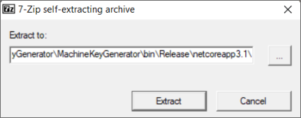
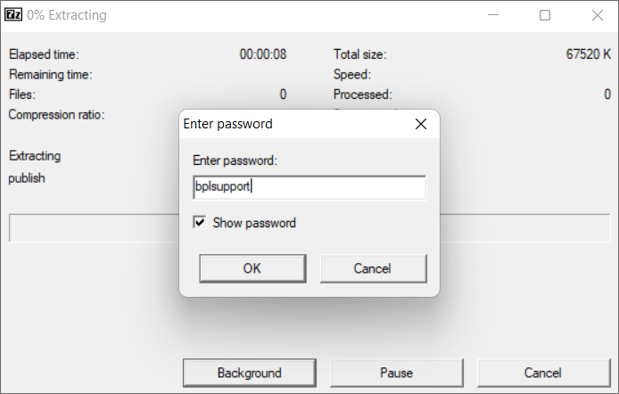
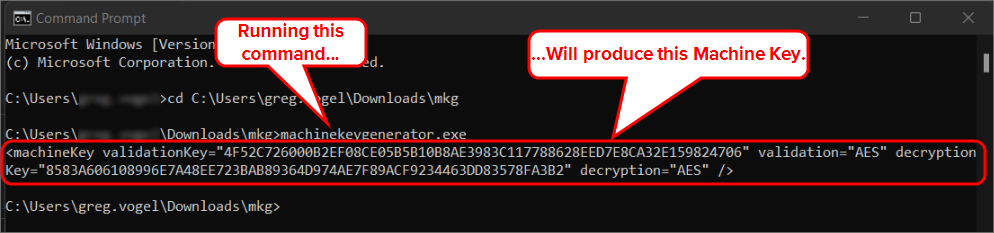
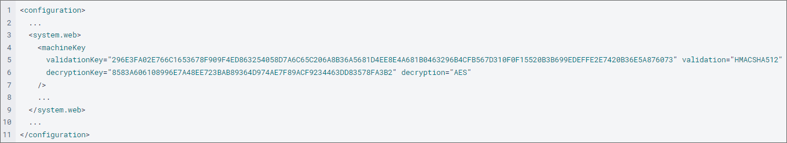

Each load balanced system must be licensed separately, and you will be given a unique license key for each load balanced system that will be used on the register page.
Each load balanced system must be licensed separately, and you will be given a unique license key for each load balanced system that will be used on the register page.Customers can license load balancing, rendering servers, and hot standby systems as installation options.
Process Director installations that use multiple servers can implement load balancing between machines to ensure that processing is evenly distributed across all machines in the installation. This prevents one machine from being overloaded with processing tasks while the other machines sit idle. When configuring Process Director to run in a load balanced environment, see the settings below.
Each load balanced system must be licensed separately, and you will be given a unique license key for each load balanced system that will be used on the register page.
The hot standby is a redundant method in which one system runs simultaneously with an identical primary Process Director system. Both systems have identical data and either point to the same database, or point to a replicated database. A hot standby is also known as hot spare. In the hot standby configuration, the backup system typically only processes traffic when the primary system goes down. This redirection of traffic to the backup server is controlled by the customer, who may use specialty devices to detect the loss of the primary server and automatically redirect traffic to the hot standby. In a hot standby configuration, ensure that any changes that are made to the configuration files on the local server are made on all systems. This includes the following configuration that is referenced in the backup procedures topic in this document.
The difference between a hot standby and a load balanced (LB) configuration is that a LB deployment requires a load balancing device that sits in front of the Process Director web applications. This device is responsible for sending traffic to one system or the other, based on each system's capabilities and configuration. In a load balanced configuration. all the servers must be pointing to the same database server. Replication should not be used except to create a hot standby of the database.
Implementing load balancing requires that some specific settings be mirrored on all machines in the installation. All Process Director servers that participate in the load balancing scheme should have the following settings made in the PreSetSystemVars function in the Custom Vars file on each machine.
public override void PreSetSystemVars(BPLogix.WorkflowDirector.SDK.bp bp)
{
// Record cache
tbl.tblProjectInstance.StaticCache.Enabled = false;
tbl.tblProjActivityInst.StaticCache.Enabled = false;
tbl.tblProjActivityUserInst.StaticCache.Enabled = false;
tbl.tblProjActivityNotifyInst.StaticCache.Enabled = false;
tbl.tblWfInstance.StaticCache.Enabled = false;
tbl.tblWfStepInst.StaticCache.Enabled = false;
tbl.tblWfStepUserInst.StaticCache.Enabled = false;
tbl.tblWfStepNotifyInst.StaticCache.Enabled = false;
tbl.tblObject.StaticCache.Enabled = false;
tbl.tblDocument.StaticCache.Enabled = false;
tbl.tblDocumentOnly.StaticCache.Enabled = false;
tbl.tblContent.StaticCache.Enabled = false;
// Read-only cache
tbl.tblProjectInstance.StaticCache.EnabledDirtyRead = true;
tbl.tblProjActivityInst.StaticCache.EnabledDirtyRead = true;
tbl.tblProjActivityUserInst.StaticCache.EnabledDirtyRead = true;
tbl.tblProjActivityNotifyInst.StaticCache.EnabledDirtyRead = true;
tbl.tblWfInstance.StaticCache.EnabledDirtyRead = true;
tbl.tblWfStepInst.StaticCache.EnabledDirtyRead = true;
tbl.tblWfStepUserInst.StaticCache.EnabledDirtyRead = true;
tbl.tblWfStepNotifyInst.StaticCache.EnabledDirtyRead = true;
tbl.tblObject.StaticCache.EnabledDirtyRead = true;
tbl.tblDocument.StaticCache.EnabledDirtyRead = true;
tbl.tblContent.StaticCache.EnabledDirtyRead = true;
tbl.tblDocumentOnly.StaticCache.EnabledDirtyRead = false;
}
All Process Director servers that participate in the load balancing scheme should have the following settings implemented on the Installation Settings page of the IT Administration section.
In the Load Balanced URLs field, enter the URL of each server that participates in the load balancing scheme, separating each URL with commas.

Each URL should be the URL of another Process Director server in the load balancing scheme. The system should be accessible behind the load balancing device, and each URL should be a direct connection to the other server, without going through the load balancing device.
Ensure that the Web Service Enabled property is set to "true" on the Installation Settings page on both systems. If Require Web Service Authentication is set to "true", you also need to add the IP addresses of all Process Director servers in the load balancing scheme to the list of IP Addresses in the Web Service Restrictions property of the primary Process Director installation.
For Process Director v5.44.700 and higher, the update to AES Encryption in the product requires an extra step to generate the appropriate <machineKey> configuration setting in the web.config file for all servers that participate in the load balancing scheme. Prior to this version, the value of the <machineKey> element was hard-coded. With the use of AES encryption, this is no longer the case.
Thus, customers who utilize two or more servers with PD installed as part of a load balancing scheme must generate validation and encryption keys and update the <machineKey> XML element in the web.config files for all PD instances. This ensures each server uses the same keys, which enables data encrypted by one server to be decrypted by the other. So, for the first upgrade to v5.44.700 or higher, you will need to follow the procedure below to apply the proper keys to all machines in the load balancing scheme:
BP Logix will provide you with an application, MachineKeyGenerator.exe, that generates the Machine Key value.
Run the application and choose a location to which to extract the files, the click the Extract button.

When prompted, enter the password “bplsupport”. Some anti-virus systems automatically reject unprotected self-extracting ZIP/7-ZIP archives, so the password has been applied this file to help prevent this automatic rejection.

Using the Command Window, navigate to the folder into which you extracted the files, then run MachineKeyGenerator.exe.

Copy the entire machineKey XML element that is circled above, i.e., everything within and including the < and > characters.
Paste the value into each PD instance's web.config file to replace the existing <machineKey> element .
Once you're done, the web.config file should look something like this:

Once all web.config files have been updated with the new <machineKey>, each machine in the load balancing scheme should be able to encrypt/decrypt any data from any of the machines in the load balanced installation.
After this procedure has been performed for the first upgrade, on every subsequent upgrade:
<machineKey> element will need to be generated and re-added, or, <machineKey> element before the upgrade and re-apply it after. Either way, manual modification of of all web.config files will be required.
Additional AES encryption configuration requirements for upgrading your system are discussed in the Upgrading to a New Version section of the Installation Guide's Reinstall/Upgrades/Moving Hosts topic.
On your load balancing device, you can configure the device to check the following URL to determine if a particular server is unresponsive:
http://HOSTNAME/admin/test_aspx.aspx
In the example above, replace "HOSTNAME" with the name of the Process Director server you wish to test. You should configure the load balancer to test this URL only during business hours, to allow the server's Internet Information Server to restart the Application Pool at night, when server activity is reduced.
One very specific type of load balancing that Process Director can provide is the use of a Rendering Server. The Rendering Server maintains a full installation of Process Director, and is linked to the same database at the production server. Unlike the production server, however, users cannot log into the rendering server or view a content list. Its sole purpose is to transfer some processor-intensive activities away from the production Process Director server. You can use the Rendering server to perform the following activities:
To set up the rendering server, install Process Director just as you would on a production server, using the same setup and database settings. When you apply the Rendering Server license key, the Process Director installation is automatically converted to a Rendering Server.
To associate the Rendering Server with a Production server, open the Custom Variables file on the Rendering Server, and set the BaseURLFromRenderingServer system variable to the URL of the production server for which the rendering options will be processed.
public override void SetSystemVars(BPLogix.WorkflowDirector.SDK.bp bp)
{
bp.Vars.BaseURLFromRenderingServer = "http://productionserver.com";
}
Next, on the production server, set the ReportRemoteURL system variable to the base URL for the Rendering Server.
public override void SetSystemVars(BPLogix.WorkflowDirector.SDK.bp bp)
{
bp.Vars.ReportRemoteURL = "http://renderingserver.com";
}
Once the appropriate variables have been set on each server, the rendering server will provide the processing for rendering operations.